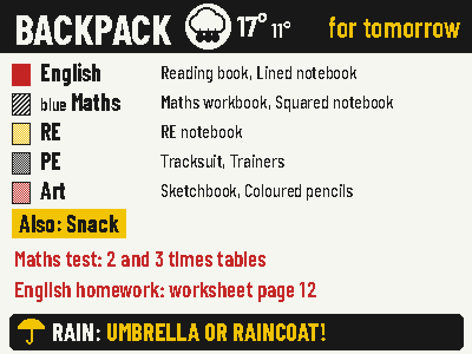
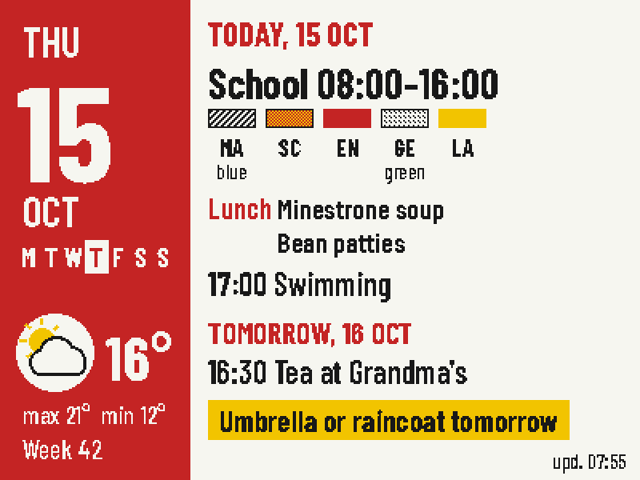
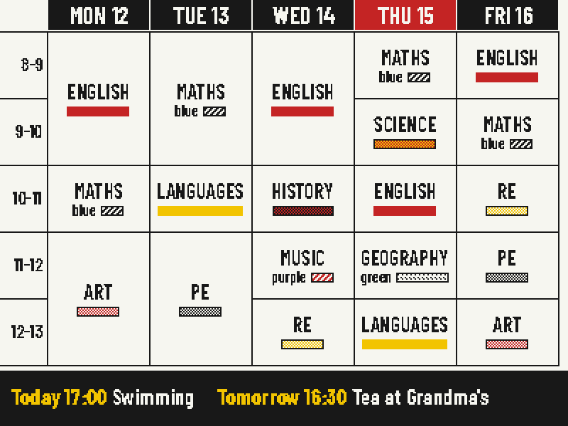
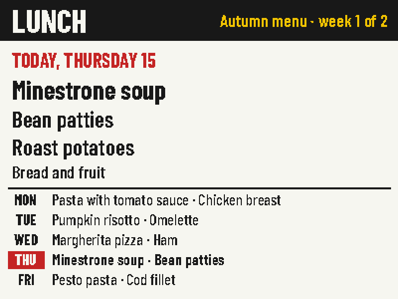
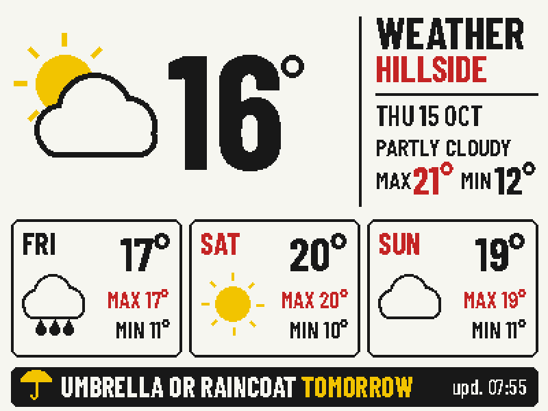
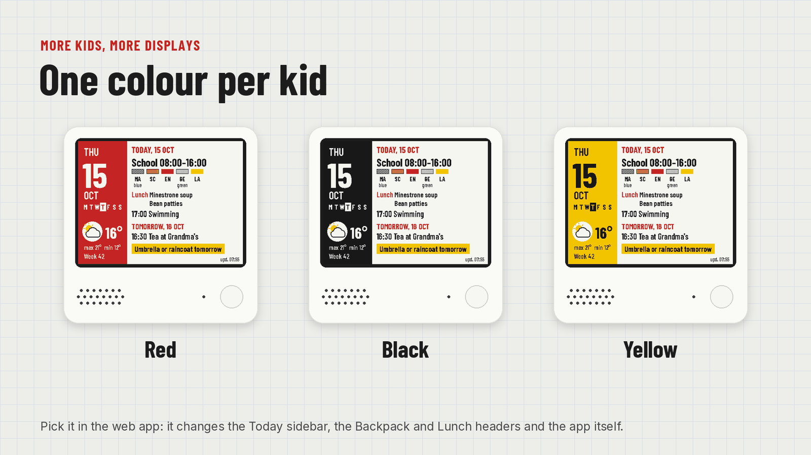
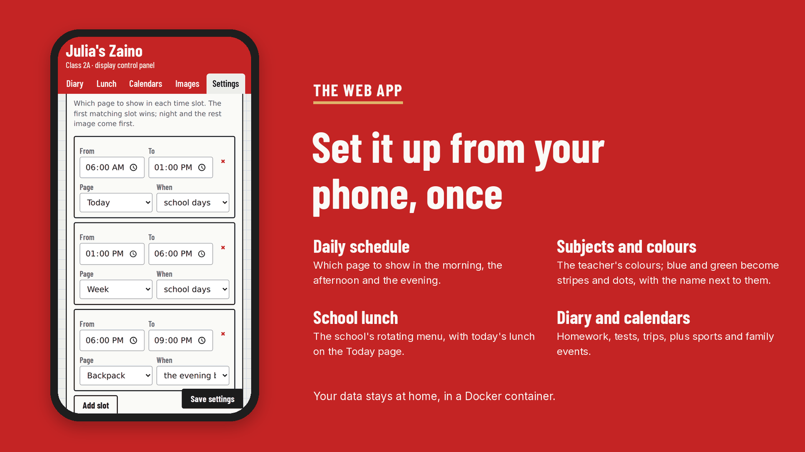

Version 1.3, free and open source, for the ZECTRIX NOTE4C: a 4.2″ e-paper display in black, white, red and yellow.
The school day, on the wall by the door.
In the morning it shows the day, the weather and what's for lunch. In the afternoon, the timetable in the teacher's colours. The evening before school, what goes in the backpack — and an umbrella warning if it's going to rain.

What it is
Zaino (Italian for “backpack”) is free software that turns a small e-paper display into a school dashboard for your kid. E-paper keeps its picture with the power off, so the screen is always there, like a clock, and the battery lasts.
A small server at home draws the pages. The display wakes up, downloads the page it needs and goes back to sleep. You set everything up once, from your phone.
- MorningToday: events, weather and the school lunch.
- AfternoonWeek: the timetable, with what's coming up.
- Evening before schoolBackpack: books, homework, tests, rain warning.
- Any timeThe front button cycles through the other pages.
Six pages, the right one at the right time
You decide which page to show at each time of day and on which days. The button on the front steps through the rest.

TodayEvents, weather, lunch and a tip for tomorrow.
WeekThe timetable as it looks in class.
LunchThe school's rotating menu.
WeatherToday and the next three days. RestYour own picture, at night.
RestYour own picture, at night.All screens are 400 × 300 pixels, shown at twice the size, with sample data.
Colours the panel can't show
Kids know their subjects by colour: maths is blue, art is pink. The panel only has four pigments, so Zaino works around it. Red, yellow and black are exact. Orange, pink and grey are mixed from dots. Blue, green and purple become stripes and dots, with the colour's name written next to them.

Set up from your phone, once
A web app on your home network holds everything: subjects and their colours, the timetable, what to bring each day, the diary with homework and tests, the school lunch, calendars for sport and family, and which page to show when. Add it to your home screen and it behaves like an app.

How it works
The display wakes up at the times you set, or when you press a button. It asks the server for the current page and only redraws if something changed. Then it goes back to deep sleep until the next wake-up, which the server works out for it.
Get the display
Zaino runs on the ZECTRIX NOTE4C Devkit: a 4.2″ four-colour e-paper panel with an ESP32-S3 and a 2000 mAh battery. The black-and-white NOTE4 is not compatible.
Install it
Use at your own risk. Firmware is provided as is, without warranty. I'm not liable for any damage to your device; unofficial firmware may void the manufacturer's warranty.
You need a ZECTRIX NOTE4C Devkit, a computer at home that's always on and runs Docker (a NAS, a mini PC, a Raspberry Pi), and a 2.4 GHz Wi-Fi network.
- Start the server
Then opengit clone https://github.com/filippocobelli/zaino.git cd zaino/server docker compose up -d --buildhttp://SERVER-IP:3021/admin. For English from the start, setZAINO_LANG=enin the compose file. - Set it upFrom the web app: weather location, subjects, timetable, lunch, calendars and the daily schedule.
- Back up the displayMake a copy of the NOTE4C's memory first. It's your only way back to the factory software.
- Install the firmwareConnect the display to Wi-Fi with the ZECTRIX reference firmware, build Zaino with your server's address (
./build.sh http://192.168.1.50:3021, only Docker needed) and install it with the ZECTRIX firmware updater, keeping the settings.
The full guide, in Italian for now, is in docs/installazione.md. No NOTE4C yet? Here is where to get one.
What's been tested, and what hasn't
- Display
- Only the NOTE4C Devkit with the four-colour panel. The black-and-white NOTE4 is not compatible.
- Tested
- On one NOTE4C at home, with the server in Docker on a Proxmox mini PC.
- Battery
- Not measured yet. The display sleeps between updates and only redraws when something changes.
- Wi-Fi
- The firmware reuses the network saved by the ZECTRIX reference firmware. It can't set up Wi-Fi on its own yet.
Your data
Timetable, names, diary and menu stay on your own server, in one file.
- Open-Meteo
- Your saved location, for the weather.
- Your calendars
- Only the iCal links you add.
- The web app
- No login: keep it on your home network or behind a VPN, never open to the internet.
How it was built
Full honesty: I'm not a programmer. I have plenty of ideas and very little coding skill, so Zaino was written with Claude, Anthropic's AI. I decided what it should do and how it should look, and tested it on the real display and with my kid. It took a good deal of trial and error before everything worked together.
If you know ESP-IDF, FastAPI or e-paper better than I do, issues and pull requests are very welcome.
Coming next: a stand-alone version that runs entirely on the display, with no server and no Docker, set up from your phone through the display's own Wi-Fi.